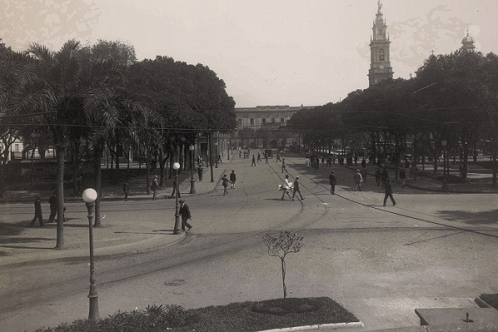

Sobre nós

Câmara Municipal
Fonte: Guia Cultural do Centro Histórico do Rio de Janeiro

Largo da Lapa
Fonte: Guia Cultural do Centro Histórico do Rio de Janeiro

Praça Mauá
Fonte: Guia Cultural do Centro Histórico do Rio de Janeiro

Praça XV
Fonte: Guia Cultural do Centro Histórico do Rio de Janeiro

Rua Uruguaiana
Fonte: Guia Cultural do Centro Histórico do Rio de Janeiro
Rio Antigo
"O Rio de Janeiro continua lindo..."
A proposta deste site é trazer fotos e informações concisas sobre a cidade do Rio de Janeiro em séculos passados.
Como fontes de nossas informações, são utilizados diversos sites considerados como referências para o objetivo proposto.
Divirta-se!